IT & Hardware / Software
หลักสูตร Intensive สำหรับงาน IT Procurement — 2 ชั่วโมง ครอบคลุม CPU / GPU / RAM / Storage / Notebook / Desktop / Server / OS / Microsoft / Software / License และการอ่านสเปคกับใบเสนอราคา
ภาพรวมหลักสูตรและเป้าหมาย
วันที่ 1 — IT & Hardware / Software
หลักสูตร Intensive สำหรับงาน IT Procurement — 2 ชั่วโมง
หัวข้อ: CPU / GPU / RAM / Storage / Notebook / Desktop / Server / OS / Microsoft / Software / License / การอ่านสเปคและใบเสนอราคา
เป้าหมายหลังเรียน 2 ชั่วโมง
ผู้เรียนไม่จำเป็นต้องจำรุ่นอุปกรณ์ทั้งหมด แต่ควรสามารถ:
อธิบายได้ว่า CPU / GPU / RAM / Storage ทำหน้าที่อะไร
อ่านสเปค Notebook / Desktop / Server เบื้องต้นได้
แยกได้ว่าสเปคไหนมีผลต่อประสิทธิภาพและสเปคไหนเกี่ยวกับ Compatibility
เข้าใจความแตกต่างของ Windows / Microsoft 365 / Office / Software License
อ่าน Model / Part Number / SKU / Warranty / License ในใบเสนอราคาได้
รู้ว่าก่อนสั่งซื้อควรถามฝ่าย IT หรือ Vendor อะไรเพิ่มเติม
ตารางเวลา 2 ชั่วโมง
เริ่มต้นด้วยคำถามกับผู้เรียน:
เวลา IT ส่ง Requirement มาว่า
“Core Ultra 7 / RAM 32GB / SSD 1TB / Windows 11 Pro”
จากนั้นอธิบายว่าเวลาจัดซื้อ IT เราจะเจอของประมาณ 4 กลุ่มหลัก
สิ่งที่จับต้องได้ เช่น
Notebook
Desktop
Server
Monitor
CPU
GPU
RAM
SSD
Firewall
Switch
โปรแกรมหรือระบบที่ใช้บน Hardware เช่น
Windows
Microsoft Office
Adobe
Antivirus
ERP
Accounting Software
สิทธิ์ในการใช้งาน Software หรือ Service
เช่น
Microsoft 365 จำนวน 30 Users / 1 Year
Antivirus 100 Devices / 1 Year
Windows Server License
FortiGuard Subscription
บริการที่ไม่จำเป็นต้องเป็นอุปกรณ์จับต้องได้ เช่น
Cloud
Backup
Hosting
Support
Maintenance
Installation
Configuration
Managed Service
สิ่งสำคัญที่สุดของ Procurement
เวลารับ Requirement อย่าถามเพียงว่า
“รุ่นอะไร ราคาเท่าไร?”
แต่ควรคิดเป็น 4 คำถาม
Hardware / Software / License / Service
Office / Graphic / AI / Server / Network / Database
RAM เท่าไร
CPU ระดับไหน
Windows รุ่นอะไร
Warranty กี่ปี
นี่เป็นเรื่องสำคัญมาก เพราะ
“สเปคสูงกว่า” ไม่ได้หมายความว่า “ใช้แทนได้เสมอ”
PART 2 — CPU
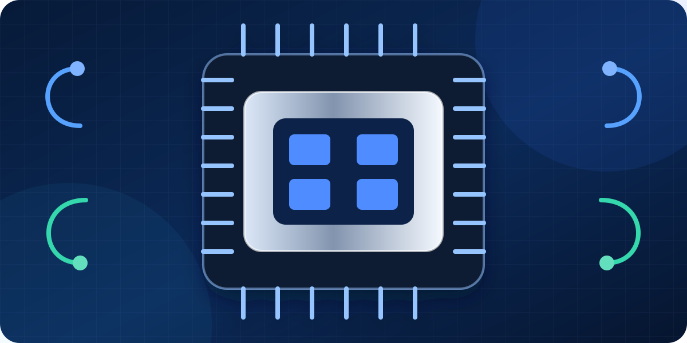
CPU คืออะไร?
CPU = Central Processing Unit
เปรียบง่าย ๆ ว่าเป็น ตัวประมวลผลหลักของคอมพิวเตอร์
CPU รับคำสั่งจาก Software แล้วประมวลผล
ตัวอย่างงานที่ CPU มีผลมาก:
Excel ขนาดใหญ่
โปรแกรมบัญชี
โปรแกรมเขียน Code
Database
CAD
Rendering บางประเภท
Virtual Machine
ยี่ห้อ CPU ที่พบบ่อย
Intel
กลุ่มทั่วไป เช่น
Intel Core
Intel Core Ultra
กลุ่ม Server / Workstation เช่น
Intel Xeon
AMD
กลุ่มทั่วไป เช่น
Ryzen
กลุ่ม Server เช่น
EPYC
Core คืออะไร?
CPU 1 ตัวมีหน่วยประมวลผลหลาย Core ได้
ตัวอย่าง
4 Core
6 Core
8 Core
16 Core
โดยทั่วไป Core มากขึ้นช่วยให้ทำหลายงานพร้อมกันได้ดีขึ้น
แต่ต้องเน้นผู้เรียนว่า
เพราะยังมีเรื่อง Architecture / Generation / Clock / Power Limit / Software ที่ใช้
Thread คืออะไร?
Thread คือจำนวนชุดงานที่ CPU สามารถจัดการพร้อมกันในเชิง Logical
เช่น
8 Core / 16 Thread
ไม่จำเป็นต้องลง Technical มากกว่านี้สำหรับ Procurement
สิ่งที่ต้องรู้คือ:
ถ้าเป็นงาน Multitasking / VM / Rendering / Server จำนวน Core และ Thread จะเริ่มมีความสำคัญมากขึ้น
Clock Speed
เช่น
3.5 GHz
5.0 GHz
คือความถี่การทำงานของ CPU
แต่ห้ามใช้ Clock อย่างเดียวตัดสินว่า CPU ตัวไหนเร็วกว่า
เช่น CPU รุ่นใหม่ 4.5 GHz อาจเร็วกว่า CPU รุ่นเก่า 5.0 GHz ได้
Generation สำคัญมาก
ตัวอย่างที่ควรสอน:
Core i5 รุ่นใหม่สามารถแรงกว่า Core i7 รุ่นเก่าบางรุ่นได้
ดังนั้นเวลาจัดซื้อ ต้องดู Model เต็ม
ไม่ควรรับ Requirement เพียง
“ขอ i7”
ควรให้ IT ระบุ เช่น
CPU รุ่นใด หรือ Performance ระดับใด
CPU Suffix
ชื่อท้าย CPU บางรุ่นบอกลักษณะการใช้งาน
ตัวอย่างที่อาจพบใน Notebook:
U — เน้นประหยัดพลังงาน
H — กลุ่มประสิทธิภาพสูง
HX — กลุ่มประสิทธิภาพสูงมาก
ไม่จำเป็นต้องให้ผู้เรียนจำทุกตัว
ให้จำว่า:
CPU ชื่อคล้ายกัน แต่ตัวอักษรท้ายต่างกัน อาจมี Performance และการใช้พลังงานต่างกันมาก
เวลา Procurement เปรียบเทียบ CPU ให้ดู
รุ่นเต็ม
Generation
Core / Thread
Performance
การใช้พลังงาน
งานที่จะนำไปใช้
ตัวอย่างถามผู้เรียน
มีเครื่อง 2 ตัว
เครื่อง A
Core i7 รุ่นเก่า
RAM 16GB
เครื่อง B
Core i5 รุ่นใหม่
RAM 16GB
ถามว่า:
ต้องรู้ Model เต็มและ Performance ก่อน
นี่คือ Mindset ที่ต้องการ
PART 3 — GPU
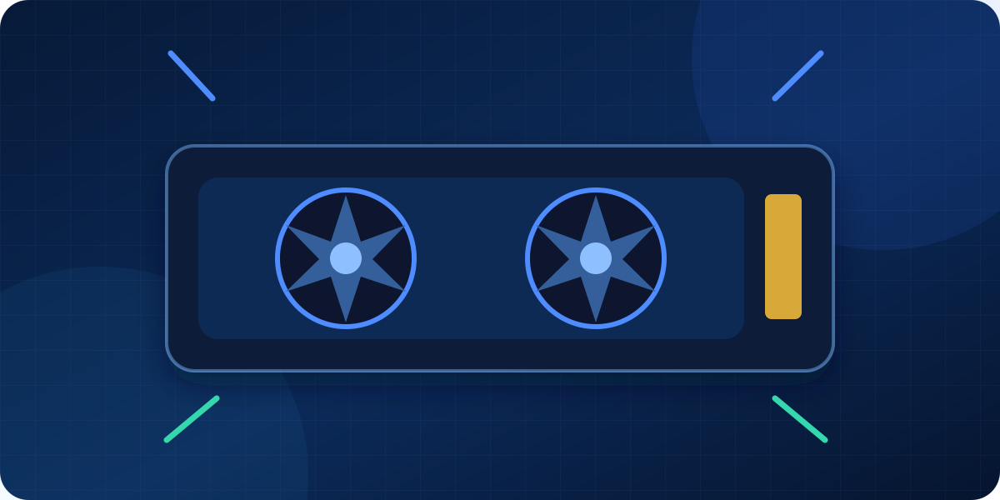
GPU คืออะไร?
GPU = Graphics Processing Unit
ใช้ประมวลผลด้าน
ภาพ
3D
Video
CAD
AI
Machine Learning
Rendering
GPU มี 2 กลุ่มหลัก
Integrated GPU
อยู่รวมกับ CPU หรือระบบหลัก
เหมาะกับ
Word
Excel
Web
Video Conference
งานสำนักงานทั่วไป
ข้อดี
ประหยัดไฟ
ราคาถูกกว่า
เครื่องเบากว่า
Dedicated GPU
มี GPU แยก
เช่น
NVIDIA GeForce RTX
NVIDIA RTX Professional
AMD Radeon
เหมาะกับ
Graphic
Video Editing
CAD
Engineering
3D
AI
VRAM คืออะไร?
เป็น Memory ของ GPU
เช่น
4GB
8GB
12GB
16GB
งานบางประเภท โดยเฉพาะ
3D
AI
Video
Model ขนาดใหญ่
ต้องใช้ VRAM มากขึ้น
จุดที่ Procurement มักพลาด
อย่าดูแค่ชื่อ RTX
เช่น
RTX รุ่นเดียวกันใน Notebook และ Desktop
เพราะ Power Limit และระบบระบายความร้อนต่างกัน
กรณี AI
ถ้าฝ่าย IT บอก
ต้องการ GPU สำหรับ AI
อย่าหยุดที่คำว่า
“ต้องการ RTX”
ควรถาม
Procurement ไม่ต้องตอบเอง แต่ต้องรู้ว่า คำถามเหล่านี้สำคัญ
PART 4 — RAM
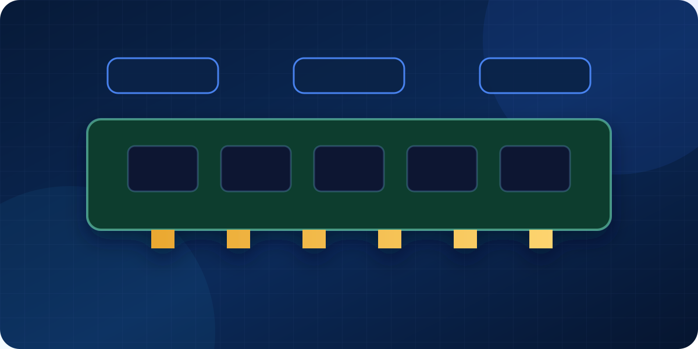
RAM คืออะไร?
RAM คือ Memory ชั่วคราวที่โปรแกรมใช้ระหว่างทำงาน
เปรียบเทียบง่าย ๆ
CPU = คนทำงาน
RAM = โต๊ะทำงาน
Storage = ตู้เก็บเอกสาร
ถ้าโต๊ะเล็กมาก ถึงคนทำงานจะเร็ว ก็ต้องคอยเก็บและหยิบของตลอด
Capacity
ตัวอย่าง
8GB
งานพื้นฐาน
16GB
เหมาะกับงานสำนักงานทั่วไป
32GB
งานหนักขึ้น เช่น
Programming
Graphic
Data
VM
Engineering
64GB+
พบใน
Workstation
Server
Virtualization
งาน Data / AI บางประเภท
DDR4 / DDR5
เป็น Generation ของ RAM
DDR5 ใหม่กว่า DDR4
แต่ประเด็น Procurement ที่สำคัญกว่าความเร็วคือ
Compatibility
Mainboard ที่รองรับ DDR4 ไม่สามารถเอา DDR5 ไปใส่แทนได้ตรง ๆ
DIMM / SO-DIMM
DIMM
พบใน Desktop / Server
SO-DIMM
ขนาดเล็กกว่า พบใน Notebook หลายรุ่น
ECC RAM
พบใน Server / Workstation
ECC สามารถช่วยตรวจและแก้ Memory Error บางประเภทได้
เหมาะกับระบบที่ต้องการ Reliability สูง
จุดที่ต้องถามเพิ่ม
Requirement:
RAM 32GB
ยังไม่ครบเสมอไป
อาจต้องรู้ว่า
DDR4 หรือ DDR5
ECC หรือ Non-ECC
จำนวน Slot
16GB × 2 หรือ 32GB × 1
สามารถ Upgrade ต่อได้หรือไม่
PART 5 — STORAGE
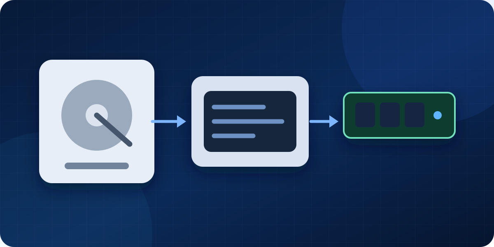
HDD
ใช้จานหมุน
ข้อดี
ราคาต่อ TB ต่ำ
เหมาะกับเก็บข้อมูลจำนวนมาก
ข้อเสีย
ช้ากว่า SSD
มีชิ้นส่วนเคลื่อนไหว
เหมาะกับ
Archive
Backup
File Storage
SSD
ไม่มีจานหมุน
ข้อดี
เร็ว
เปิดเครื่องเร็ว
เปิดโปรแกรมเร็ว
SATA SSD
ใช้ Interface SATA
ความเร็วต่ำกว่า NVMe แต่ยังเร็วกว่า HDD มาก
NVMe SSD
ใช้ PCIe/NVMe
เร็วกว่า SATA SSD ในหลายสถานการณ์
พบมากใน Notebook / Desktop รุ่นใหม่
Capacity
เช่น
256GB
512GB
1TB
2TB
4TB
สิ่งที่ต้องระวัง
Requirement เขียน
SSD 1TB
Vendor เสนอ
HDD 1TB
ความจุเท่ากัน แต่สินค้าไม่เทียบเท่า
เพราะ Technology และ Performance ต่างกัน
อีกตัวอย่าง:
Requirement
1TB NVMe SSD
เสนอ
1TB SATA SSD
ความจุเท่ากัน แต่ Interface และ Performance ต่าง
อาจไม่ Equivalent
สรุป Hardware แบบจำง่าย
ให้ผู้เรียนจำตารางนี้
| ส่วนประกอบ | หน้าที่ | เวลาจัดซื้อดูอะไร |
|---|---|---|
| CPU | ประมวลผล | Model / Gen / Core / Performance |
| GPU | กราฟิก / AI | Model / VRAM / Compatibility |
| RAM | Memory ขณะทำงาน | Capacity / DDR / ECC |
| Storage | เก็บข้อมูล | SSD/HDD / NVMe/SATA / Capacity |
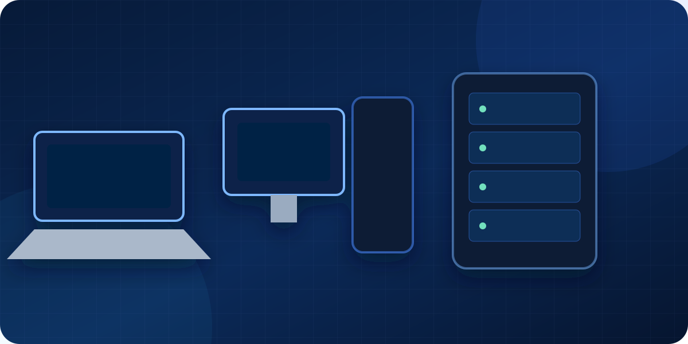
Notebook
เหมาะกับ
พนักงานทั่วไป
Sales
Management
Hybrid Work
WFH
เวลาจัดซื้อควรดู
Performance
CPU
RAM
Storage
Display
ขนาด
Resolution
Connectivity
USB
USB-C
HDMI
LAN
Wi-Fi
Bluetooth
Mobility
น้ำหนัก
Battery
OS
Windows Home / Pro
Warranty
1 ปี
3 ปี
On-site
Carry-in
Business Notebook vs Consumer Notebook
จุดนี้มีประโยชน์กับ Procurement มาก
Notebook Business อาจแพงกว่าสเปค CPU/RAM ใกล้กัน เพราะราคาไม่ได้มาจาก Performance อย่างเดียว
อาจต่างกันเรื่อง
Warranty
On-site Support
Chassis
Security
Docking
Spare Part Availability
Product Lifecycle
Management Features
ดังนั้น
Notebook 30,000 บาท กับ 40,000 บาท ที่ CPU/RAM เท่ากัน ไม่ได้แปลว่าเครื่อง 40,000 แพงเกินเหตุเสมอไป
Desktop
ข้อดี
Upgrade ง่ายกว่า
Performance ต่อราคาดี
Cooling ดีกว่า
Maintenance ง่าย
เหมาะกับ
Office ประจำโต๊ะ
Graphic
Engineering
Workstation
คอมพิวเตอร์ระดับ Professional
อาจใช้
CPU ระดับสูง
Professional GPU
ECC RAM
Certification จาก Software Vendor
ใช้กับ
CAD
Engineering
Architecture
3D
Scientific Work
Server
Server ไม่ใช่แค่ Desktop ที่แรงกว่า
ออกแบบมาเพื่อ
ทำงานต่อเนื่อง
รองรับ User หลายคน
Reliability
Serviceability
อาจมี
Xeon / EPYC
ECC RAM
RAID Controller
Hot Swap Disk
Redundant PSU
Remote Management
Hot Swap
เปลี่ยนอุปกรณ์บางชนิด เช่น Disk โดยไม่ต้อง Shutdown ระบบในบาง Configuration
Redundant PSU
มี Power Supply มากกว่า 1 ตัว
ถ้าตัวหนึ่งเสีย อีกตัวสามารถช่วยให้ Server ทำงานต่อได้ตามการออกแบบ
ตัวอย่างคำถาม
Vendor เสนอ
CPU เท่ากัน
RAM เท่ากัน
SSD เท่ากัน
ยังไม่พอ
ต้องดูเพิ่ม
Port
Screen
Battery
Warranty
Upgrade
OS
Business Feature
Support
PART 7 — OPERATING SYSTEM
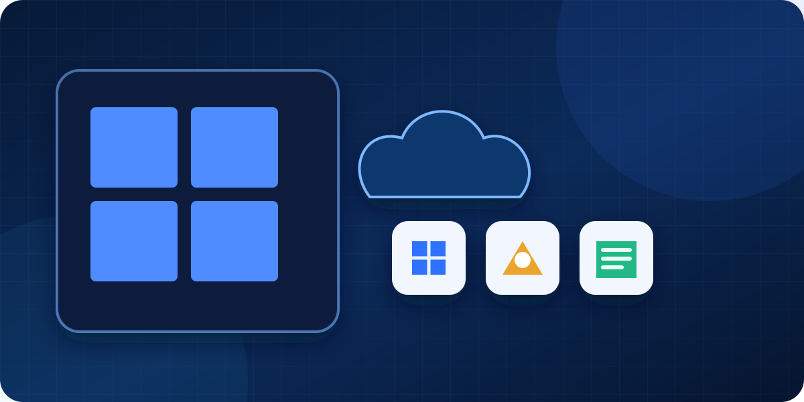
OS คืออะไร?
Operating System คือ Software หลักที่ควบคุม Hardware และ Application
ตัวอย่าง
Windows
Windows Server
Linux
macOS
Windows 11 Home
เหมาะกับผู้ใช้ทั่วไป
Windows 11 Pro
มี Feature สำหรับ Business เพิ่มขึ้น
เช่น
Domain Join
BitLocker
Remote Desktop Host
Business Management Features บางส่วน
ดังนั้นถ้า Requirement ระบุ
Windows 11 Pro
เครื่องที่มาพร้อม Windows Home
ไม่ควรถูกมองว่า Equivalent โดยอัตโนมัติ
Windows Server
ออกแบบสำหรับ Server
ใช้กับระบบ เช่น
Active Directory
File Server
Application
Database
Infrastructure Service
Windows 11 Pro กับ Windows Server ไม่ใช่ของแทนกัน
Linux
เป็น OS ที่นิยมใน
Server
Cloud
Web Server
Development
Infrastructure
ตัวอย่าง Distribution
Ubuntu
Red Hat
Debian
บางตัวฟรี บางตัวมี Subscription / Support
ดังนั้นคำว่า
“Linux ฟรี”
ไม่ถูกต้องในทุกสถานการณ์
macOS
ใช้กับเครื่อง Apple
Licensing และ Hardware Model แตกต่างจาก Windows PC
PART 8 — SOFTWARE & MICROSOFT
Software มีหลายแบบ
Installed Software
ติดตั้งในเครื่อง
เช่น
Office
AutoCAD
Photoshop
Web Application
ใช้งานผ่าน Browser
SaaS
Software as a Service
เช่น Software ที่คิดค่าบริการราย User / Month
Microsoft Office แบบซื้อขาด
เช่น Office รุ่นที่ขายแบบ Perpetual
ผู้ซื้อได้สิทธิ์ใช้ Version ที่ซื้อ ตามเงื่อนไข License
ไม่ได้หมายความว่าจะได้รับ Version ใหม่ตลอด
Microsoft 365
เป็น Subscription Service
คิดเป็น
รายเดือน
รายปี
ขึ้นอยู่กับ Plan / Agreement
อาจประกอบด้วย
Word
Excel
PowerPoint
Outlook
Exchange Online
OneDrive
SharePoint
Teams
แต่
Microsoft 365 ทุก Plan ไม่ได้มี Feature เหมือนกัน
ตัวอย่างที่เจอในการจัดซื้อ
Vendor A
Microsoft 365 Business Basic
Vendor B
Microsoft 365 Business Standard
อย่าเทียบแค่
“Microsoft 365 เหมือนกัน”
เพราะ Plan ต่างกัน Feature ต่างกัน
Exchange Online
Email Service ของ Microsoft
OneDrive
Cloud Storage สำหรับ User
SharePoint
ใช้จัดเก็บและทำงานร่วมกันภายในองค์กร
Teams
Communication / Collaboration
สิ่งที่ Procurement ต้องจำ
เวลาเจอ Microsoft ให้ถาม:
PART 9 — SOFTWARE LICENSING
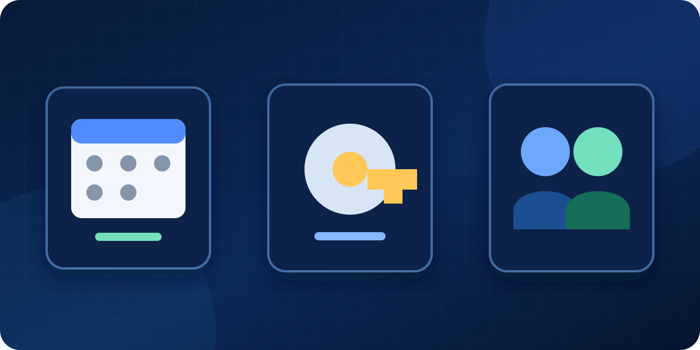
นี่เป็นจุดที่ Procurement ควรเข้าใจให้ดี
License คือ สิทธิ์ในการใช้งาน
Subscription
จ่ายตามระยะเวลา
เช่น
1 Year
หมดอายุแล้วต้อง Renewal หากต้องการใช้งาน Service ต่อ
Perpetual
สิทธิ์ใช้งาน Version ที่ซื้อแบบไม่มีวันหมดอายุตามข้อตกลงของ Product นั้น
แต่อาจไม่ได้รวม
Upgrade Version
Support ตลอดไป
Cloud Service
OEM
Software ที่มากับ Hardware
ตัวอย่างที่พบง่าย
Windows OEM ที่มากับ Notebook
โดยทั่วไปผูกกับ Hardware ตามเงื่อนไขของ Product
Retail
ซื้อ License แยกจาก Hardware
รายละเอียดสิทธิ์ในการย้ายเครื่องต้องตรวจสอบตาม Product Terms
User License
คิดตามจำนวนผู้ใช้
เช่น
100 Users
Device License
คิดตามจำนวน Device
เช่น
100 Computers
Concurrent License
คิดตามจำนวนคนที่ใช้งานพร้อมกัน
ตัวอย่าง:
องค์กรมีพนักงาน 100 คน
แต่ Software อนุญาต Concurrent 20 Users
หมายความว่ามีผู้ใช้พร้อมกันได้ตามจำนวน License ที่กำหนด
Server / Core Licensing
Software Enterprise บางประเภทคิดจาก
Server
CPU
Core
ตรงนี้ไม่ต้องให้ผู้เรียนคำนวณเอง
แต่ต้องรู้ว่า
“จำนวน User” ไม่ใช่ Metric เดียวของ Software License
CAL
CAL = Client Access License
พบใน Microsoft Server Products บางประเภท
เป็นสิทธิ์สำหรับ User หรือ Device ในการเข้าถึง Server Service ตาม Licensing Rule ของ Product นั้น
สำหรับ Procurement ให้รู้ Concept ก่อน
ไม่จำเป็นต้องลงสูตร Licensing ลึกในคลาสแรก
Maintenance / Support
Software บางตัวมี
License
Maintenance
Support
แยกกัน
เช่น
License 100,000
Annual Support 20,000
ดังนั้นต้องถามว่า
Renewal
คือการต่ออายุ
Procurement ควรเก็บข้อมูล
วันเริ่ม
วันหมดอายุ
จำนวน License
Contract
Vendor
Renewal Date
เพราะ License หมดอายุสามารถกระทบระบบงานได้
ตัวอย่างใบเสนอราคา
Microsoft 365 Business Standard
Qty: 50 Users
Term: 12 Months
ตีความว่า
Product
Microsoft 365 Business Standard
Quantity
50 Users
Term
12 เดือน
แล้วต้องตรวจเพิ่มว่า
New หรือ Renewal
Start Date
Tax
Support
Implementation
Migration
PART 10 — วิธีอ่าน SPECIFICATION & QUOTATION
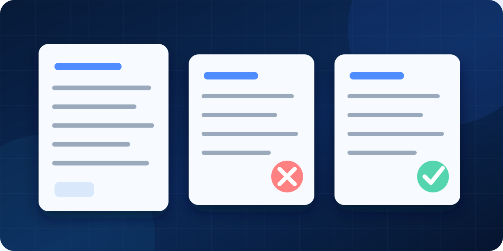
เวลารับ Quotation ให้ไล่ตามนี้
เช่น
Dell / HP / Lenovo
ชื่อรุ่นสินค้า
แต่ยังไม่พอ
สำคัญมาก
เพราะ Model เดียวกันอาจมีหลาย Configuration
ตัวอย่าง
Notebook ชื่อรุ่นเดียวกัน
แต่ SKU A
RAM 16GB
SSD 512GB
Windows Home
SKU B
RAM 32GB
SSD 1TB
Windows Pro
ดังนั้น
ตรวจทีละรายการ
CPU
GPU
RAM
Storage
Display
Network
Port
OS
จำนวนตรงกับ Requirement หรือไม่
ดูว่า
กี่ปี
On-site หรือ Carry-in
Next Business Day หรือไม่
Parts + Labor หรือไม่
ถ้ามี Software
ดู
Product
Edition
User/Device
Quantity
Term
ดูว่าราคารวม
Installation
Configuration
Delivery
Training
Migration
หรือไม่
IT Hardware บางรายการต้องรอหลายสัปดาห์
ถ้าเป็นขององค์กรหรือ Network/Server
ควรเช็กว่าสินค้าใกล้เลิกผลิตหรือหมด Support หรือไม่
ตัวอย่าง Workshop จริง
ฝ่าย IT ส่ง Requirement:
Business Notebook
Intel Core i7
RAM 16GB
SSD 512GB NVMe
Windows 11 Pro
Wi-Fi 6
Warranty 3 Years
Vendor A เสนอ:
Core i7
RAM 16GB
SSD 512GB
Windows 11 Home
Wi-Fi 6
Warranty 3 Years
ราคา 31,000
Vendor B เสนอ:
Core Ultra 5
RAM 16GB
SSD 1TB NVMe
Windows 11 Pro
Wi-Fi 6E
Warranty 3 Years
ราคา 33,000
ถามผู้เรียน:
วิเคราะห์ Vendor A
CPU ดูเหมือนตรง
RAM ตรง
SSD ต้องเช็กว่าเป็น NVMe หรือไม่
Windows Home ไม่ตรง Requirement
ดังนั้นยังไม่ผ่าน
วิเคราะห์ Vendor B
RAM ผ่าน
SSD สูงกว่า
Windows ผ่าน
Wi-Fi ผ่านหรือสูงกว่า
Warranty ผ่าน
แต่ CPU:
ยังต้องเช็ก Model เต็ม + Performance
ดังนั้นยังไม่ควรสรุปจากชื่อ CPU
คำตอบที่ต้องการจากผู้เรียน
ไม่เลือกจาก
“i7 ดีกว่า Ultra 5”
และไม่เลือกจาก
“ตัว B แพงกว่าเลยน่าจะดีกว่า”
แต่ต้องเทียบ Requirement ทีละข้อ
MINI WORKSHOP ปิดคลาส
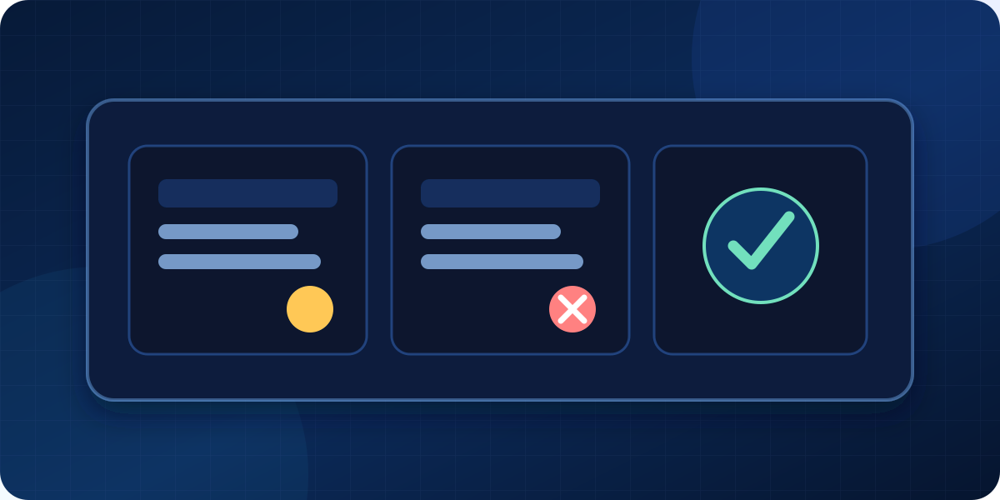
ให้ผู้เรียนตอบเร็ว ๆ
ข้อ 1
RAM 32GB DDR4
สามารถแทน
RAM 16GB DDR5
Capacity สูงกว่า แต่ Technology / Compatibility ต่างกัน
ข้อ 2
SSD 1TB SATA
กับ
SSD 1TB NVMe
Capacity เท่ากัน แต่ Interface และ Performance ต่างกัน
ข้อ 3
Windows 11 Home
ข้อ 4
ต้องดู Generation และ Model เต็ม
ข้อ 5
ต้องดู Part Number / SKU
Checklist ที่ให้ผู้เรียนใช้หลังคลาส
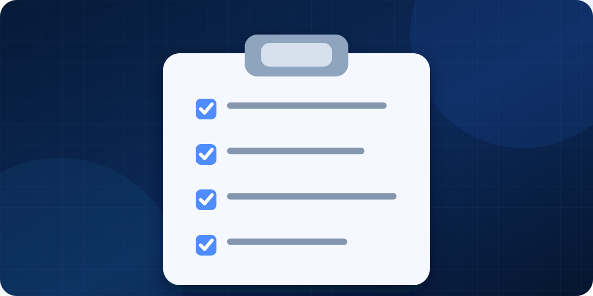
เวลาได้รับสินค้า IT ให้ถามตามนี้
Hardware
Brand อะไร
Model อะไร
Part Number / SKU อะไร
CPU รุ่นเต็มอะไร
GPU มีหรือไม่ / รุ่นอะไร
RAM เท่าไร / DDR อะไร
Storage ชนิดอะไร / ความจุเท่าไร
Port ที่ต้องใช้ครบหรือไม่
OS Edition ถูกหรือไม่
Warranty กี่ปี
Software
Product อะไร
Edition / Plan อะไร
License แบบ User หรือ Device
จำนวนเท่าไร
Subscription หรือ Perpetual
กี่เดือน / กี่ปี
New หรือ Renewal
Support รวมไหม
Quotation
Model ถูก
SKU ถูก
Spec ตรง Requirement
Quantity ถูก
Warranty ถูก
License ถูก
Service รวมอะไรบ้าง
Lead Time เท่าไร
มีค่าใช้จ่ายต่ออายุหรือไม่
สรุป 5 ประโยคที่ต้องจำจากวันที่ 1
ชื่อรุ่นสูงกว่า ไม่ได้แปลว่า Performance สูงกว่าเสมอ
Capacity เท่ากัน ไม่ได้แปลว่า Specification เท่ากัน
ตัวอย่าง 1TB HDD ≠ 1TB NVMe SSD
สเปคสูงกว่า ไม่ได้แปลว่า Compatible
Software ต้องดูทั้ง Product + Edition + Quantity + License Model + Term
สิ่งที่ผู้เรียนควรทำได้เมื่อจบวันที่ 1
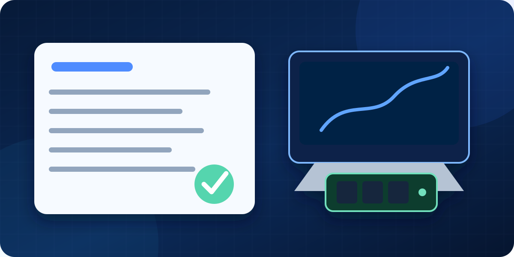
เมื่อได้รับ Requirement แบบนี้:
Lenovo / Dell / HP Business Notebook
Intel Core Ultra 7
RAM 32GB DDR5
SSD 1TB NVMe
Windows 11 Pro
Wi-Fi 6E
3 Years On-site Warranty
ผู้เรียนควรสามารถอ่านออกว่า:
Brand อาจยืดหยุ่นหรือไม่ ต้องถาม IT
CPU ต้องตรวจ Model เต็ม
RAM ต้อง 32GB และ DDR5
SSD ต้องอย่างน้อย 1TB และเป็น NVMe
Windows ต้องเป็น Pro
Wi-Fi ต้องรองรับตาม Requirement
Warranty ต้อง 3 ปี และต้องตรวจประเภท On-site
ต้องตรวจ SKU ก่อนสั่งซื้อ
และที่สำคัญที่สุดคือรู้ว่า
นี่คือพื้นฐานที่จะต่อยอดไปวันที่ 2 เรื่อง Network / Server / Cloud / Security และวันที่ 3 เรื่อง การเทียบสเปคและหารุ่นทดแทนจริง
ต่อยอดไป Day 2 และ Day 3
Day 2: Network / Server / Cloud / Security · Day 3: การเทียบสเปคและหารุ่นทดแทนจริง